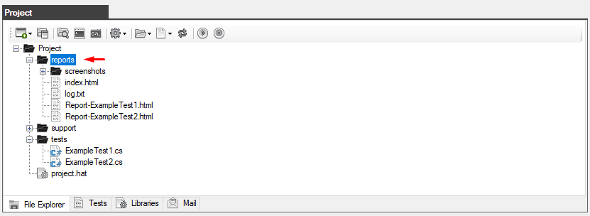
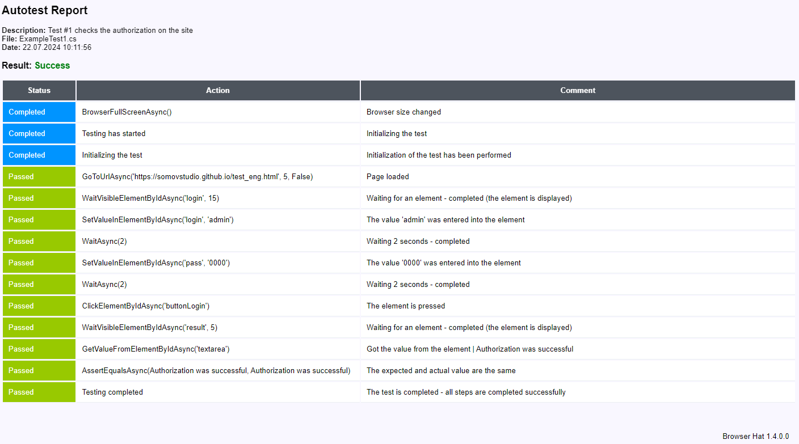
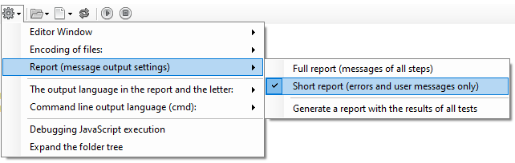
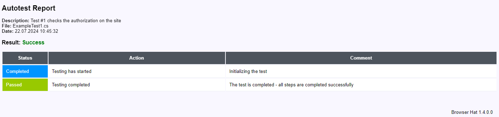
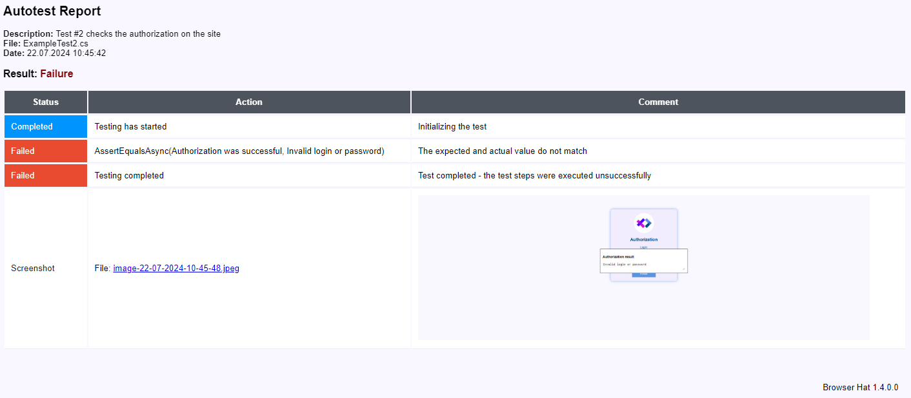

Autotest Report
When you run the autotest, a new reports folder will be created in the project folder if it does not already exist.
After completion of the autotest, a file with a report in html format will be created.
The name of the report file corresponds to the name of the autotest file with the prefix Report
For example, when performing the ExampleTest1.cs autotest, a report will be created with the name Report-ExampleTest1.html
To view the results for all completed autotests, a file is created and updated index.html

The resulting report opens in any browser
Full report on all completed inspections (index.html ) it looks like this:

This report (index.html) is created or updated after the completion of any autotest.

This report can be generated or updated manually via the project settings menu.
The report with the successful completion of all steps and checks looks like this:

The report on the failed test looks like this:

If any critical errors occur during execution, they will be reflected in the report as follows:

Using the project settings menu, you can switch the report type to "Summary Report", in which case only user messages and error messages will be displayed in the report.

So the reports will look like this:


Created with the Personal Edition of HelpNDoc: Create HTML Help, DOC, PDF and print manuals from 1 single source